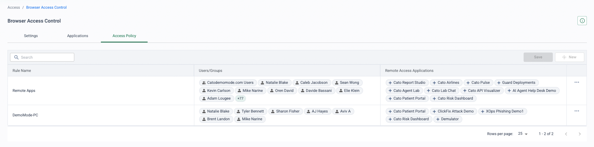
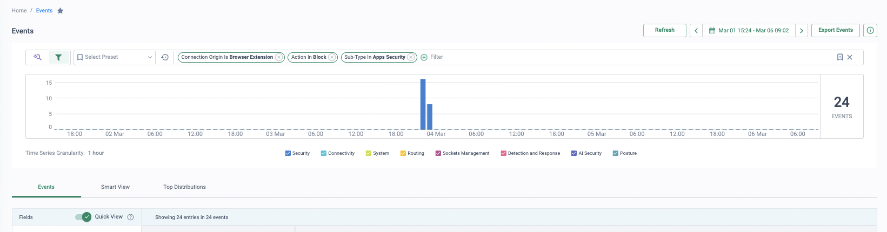
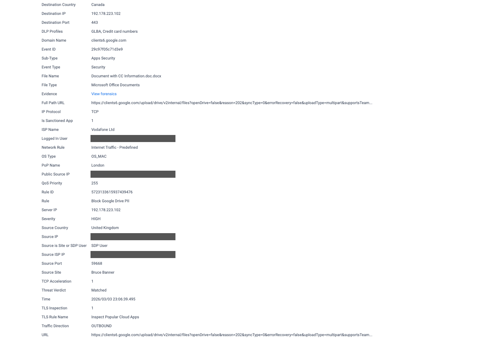
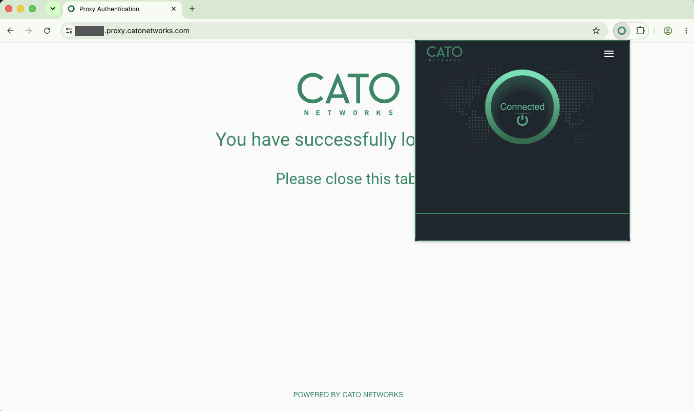

Why this matters
Every organisation has a population it cannot manage: contractors on their own laptops, partner staff governed by someone else's IT department, auditors on-site for a fortnight, and employees reaching for a personal tablet out of hours. They all need the same thing — a handful of internal applications — and none of them can be enrolled in MDM or asked to install corporate software.
The objective: deliver application access to devices you don't own, without putting those devices on your network and without letting your data settle on them.
Unmanaged devices break the usual playbook
The old answers are slow and expensive
- Ship a managed laptop — hardware cost, licences, courier lead time, and a recovery chase when the contract ends
- Stand up VDI — infrastructure to run, images to patch, and a user experience nobody thanks you for
- Say no — and watch data walk out through personal email and file-sharing workarounds instead
And the client route is closed
- You can't install software on a device you don't own — and many partner organisations contractually forbid it
- A client grants network-level reach that an unknown, unmanaged device can never justify
- Personal devices span every OS and patch level — posture is unknowable and unenforceable
- VPN from a home laptop means corporate data cached on a machine you will never see again
“When a contractor starts on Monday, how do they actually get application access — and what has landed on their personal device by Friday?”
Where this sits in the Cato SASE platform
- Unmanaged devices use a browser on-ramp: the access portal, the Browser Extension or the Enterprise Browser.
- Every session terminates at the Cato PoP; the device never receives an address, a route or a network path.
- Users reach published private apps and inspected SaaS; DLP blocks downloads and RBI isolates risky web.
- Every sign-in, app launch and block is an event attributed to a named user in the CMA.
Clientless ZTNA: the browser is the endpoint
Cato publishes individual private applications to a clientless access portal delivered from the nearest Cato PoP. The user opens a URL in any modern browser, authenticates against the corporate IdP with MFA, and sees only the applications their IdP group entitles them to. Each application is streamed into the browser session — the device never receives a network address, a route, or any ability to scan or move laterally. Access is application-level, not network-level.
Because every session terminates in the Cato cloud, the rest of the platform applies in the same pass: CASB and DLP policies stop files being downloaded to the unmanaged endpoint, and Remote Browser Isolation (RBI) renders risky web content as a pixel stream so active code never executes on a device you can't inspect.
What the business gets
Zero endpoint footprint
Nothing to install, licence, patch or recover. Any device with a modern browser works on day one — including devices owned by another organisation.
App-level exposure, not network-level
Users see only the applications published to them. There is no tunnel, no route and no address space — nothing to scan and no lateral movement to defend against.
Data stays off unmanaged devices
CASB and DLP policies block downloads to unmanaged endpoints, and RBI returns risky web content as a pixel stream — no code, no files, no residue.
Onboard in minutes, offboard instantly
Access follows IdP group membership. Add a contractor to a group and the portal populates; remove them and every application disappears with the next sign-in.
Pick the on-ramp: portal, extension or enterprise browser
Clientless ZTNA is no longer a single method. Universal ZTNA now offers three browser-based on-ramps for devices you don't manage, alongside the Cato Client for devices you do — all enforcing the same policies, from the same engine, managed in the same CMA. Choose by how much the device needs to reach and how long the relationship lasts:
| On-ramp | Footprint on the device | What it reaches | Best for |
|---|---|---|---|
| Clientless access portal | None — any modern browser | Individual published private web apps, streamed through the PoP | Short-lived third-party access; devices you will never touch |
| Cato Browser Extension | Native Chrome extension — installs in minutes, no client, no admin rights | SaaS applications with the full inspection stack (threat prevention, data protection, access control) — no direct access to internal resources | BYOD and contractor SaaS access at scale; the fastest rollout |
| Cato Enterprise Browser | A dedicated secure browser installed on the device | Web, SaaS and private applications — isolated, browser-native sessions with full inspection and data protection | Deeper contractor/BYOD access including private apps, without managing the device itself |
| Cato Client | Managed agent (all major OSes) | Network-level access governed by ZTNA policy and device posture | Corporate-managed devices — see Securing the Hybrid Workforce |
Both the Browser Extension and the Enterprise Browser are included in the ZTNA user licence — no additional SKU. They enforce the ZTNA policies you already run and are managed and monitored from the CMA like every other on-ramp, so adding them creates no new rule set and no operational silo.
How to run the demo
Before the meeting, confirm the clientless access portal is enabled, at least one internal web application is published to a contractor IdP group, and a DLP rule blocking downloads to unmanaged devices is in place. The whole demo runs from a browser — no Cato Client needed on the demo machine.
-
Open the user access portal in a private window
Use a private/incognito window to make the point unmissable: this is a bare browser with no client, no certificate and no enrolment — exactly what a contractor's laptop looks like.
-
Authenticate through the IdP with MFA
Sign in as a contractor user (e.g. “Priya”). The portal redirects to the corporate IdP; complete MFA. Point out that identity and MFA policy stay in the customer's existing IdP — Cato consumes it, it doesn't replace it.
-
Launch a published internal web app
Priya's portal shows only the applications her IdP group entitles her to. Open one — an internal web app renders in a browser tab, streamed through the PoP. No IP address, no route, no network membership.
-
Try to reach anything that isn't published
Attempt to browse to another internal resource by hostname or IP. It fails — and this is the key line: it doesn't fail because a firewall said no, it fails because there is nothing to reach. Unpublished resources simply don't exist from this session.
-
Attempt a file download — DLP blocks it
Security → DLP Configuration
From the published app, try to download a document. DLP blocks the transfer because the session comes from an unmanaged device. Show the rule: same DLP engine, same policy language as the rest of the platform, scoped by device state.
-
Show the audit trail
Monitor → Events
Filter events to Priya's identity: the portal sign-in, each application launch and the blocked download — every clientless access event attributed to a named user. This is the evidence an auditor asks for.
-
Position the extension and the enterprise browser
Where the customer needs more than published web apps, introduce the other two on-ramps: the Browser Extension (Chrome extension, SaaS access with the full inspection stack, deployed in minutes) and the Enterprise Browser (browser-native access that extends to private applications). The talk-track line: same identities, same policies, same events — the CMA doesn't care which on-ramp produced the session. Demo them live if they're enabled in your tenant; otherwise walk the comparison table above.
-
Close on lifecycle
Finish with offboarding: remove the user from the IdP group and the portal is empty at next sign-in. No account teardown, no VPN certificate revocation, no laptop to chase.
How to prove it in the customer's tenant
The demo shows one contractor in a portal; the PoV proves the claim that actually closes this conversation: data never settles on a device you don't manage. Run a small unmanaged-device pilot — typically six to ten people split across the browser on-ramps: a contractor cohort on the Applications Portal, a BYOD cohort on the Browser Extension in their own Chrome, and, where the tenant is licensed for it, an Enterprise Browser cohort — with one twist that makes the evidence land: at least one pilot user keeps working on their corporate laptop all week, proving the controls bite per device, not per person. Agree the criteria below before configuring anything, per Running a Cato PoV: each row is a measurable statement with a named evidence artefact, reviewed at the weekly sync.
| Success criterion | What we prove | Evidence artefact | Where it lives |
|---|---|---|---|
| Portal reaches the named apps — view-only proven | A contractor's portal shows only the named internal applications, and inside the RBI-routed session her download and copy attempts fail — the attempt is evidenced, not asserted | Screenshot of the refused download/copy in the isolated session, beside the portal session events for the same identity | Applications Portal · Monitor → Events |
| Policy enforced inside a personal Chrome | A BYOD user's staged sensitive upload from their own Chrome, running the Browser Extension, is blocked at the PoP mid-session — no client anywhere on the device | Apps Security block event carrying the file name and the matched DLP profile | Monitor → Events · Security → App & Data Inline |
| Enterprise Browser keeps private-app data pinned (where licensed) | A pilot user reaches a private application inside the Enterprise Browser while copy/paste, downloads and printing are refused by the browser workspace itself | Screenshot of the refused action in the browser, beside the session's events | Cato Enterprise Browser · Monitor → Events |
| The corporate device is untouched | The same BYOD user's corporate laptop on the Cato Client works exactly as before — on the same day their personal-device block fires | Events filtered to one identity: the BYOD block beside the corporate-device allow, same date | Monitor → Events |
| Zero footprint, full audit | No Cato software is installed on any pilot personal device, yet every sign-in, app launch and block is attributed to a named user for the whole pilot | Portal sign-in from a bare private window; per-identity event export for the pilot period | Monitor → Events |
- Licences — ZTNA/SDP user licences covering the cohort for the PoV period. The Browser Extension and Enterprise Browser sit inside the ZTNA user licence per the callout above — but confirm the Enterprise Browser is available in this tenant before criterion three is written; if it isn't, run a two-on-ramp pilot rather than promise a third.
- TLS inspection staged first — the in-browser data-control proof rides on content inspection: Data Control rules require TLS inspection to see the content. Stage it per TLS Inspection: Staged Rollout Playbook, with privacy sign-off that explicitly covers pilot sessions from personal devices.
- Identity first — the cohort exists in the customer's IdP and provisions to Cato via SCIM as a dedicated group (e.g. BYOD-Pilot) before any policy is written; the portal authenticates by SSO against the same IdP (design choices in Identity Integration Design).
- The named application list — two or three internal applications, written down at the workshop. The portal publishes web applications and RDP/SSH hosts; RDP farms behind a connection broker or load balancer are not supported, so pick targets accordingly.
- Two devices per key user — at least one BYOD pilot user brings both their personal device and their corporate laptop. Criterion four — the one that proves policy follows the device, not the person — depends on it.
Configuration walkthrough
-
Pin the cohort in identity
Access → Directory Services Access → Users
Provision the BYOD-Pilot group via SCIM and confirm the cohort — Priya the contractor, Marcus with his personal Chrome, Amira on the Enterprise Browser — appears under Users. Group changes reflect in near real time, and a user unassigned in the IdP is disabled at the next sync — which is the offboarding story you will tell at the wrap-up (SCIM User Provisioning).
-
Publish the named applications to the portal
Add each named application as an Internal Application in the Applications Portal, entitled to BYOD-Pilot. The portal brokers every session through the PoP — there is no direct communication between the user's device and the resource — and alongside internal web apps it can publish RDP or SSH hosts if a jump-style target is on the list (Browser Application Portal Overview).

The portal's configuration side (demo tenant, fictional identities): access-policy rules pairing user groups with the named applications they may open — each chip one published app, each row one entitlement decision. Your pilot needs one row scoping BYOD-Pilot to the named list. -
Route the portal cohort through RBI — this is the view-only proof
Security → Internet Firewall
Configure the contractor cohort's portal access through RBI (invoked via the Remote Browsing action): the published app executes remotely and only a visual stream reaches Priya's browser, with downloads, copy/paste, file transfer and printing blocked. Note the mechanics honestly: portal apps configured for RBI open the entire portal in one isolated session — every app in it shares that session (Controlling Access to Private Apps Through RBI, RBI). In week two, have Priya attempt a download and a copy on camera — the refused attempt is the criterion's artefact, so stage it deliberately.
-
Stage TLS inspection, then write the Data Control rule — monitor-first
Security → TLS Inspection Security → App & Data Inline
With TLSi staged over the pilot scope, add a Data Control rule for BYOD-Pilot: upstream and downstream, matching the DLP profiles the customer cares about (PII is the usual pick), tracking on. Run it in monitor for the first week — the monitor events are the baseline that makes the week-two block honest — then flip the action to Block. Blocks land as Apps Security events carrying the file name and matched profile (Creating the Data Control Policy, Understanding Event Fields).

The three-filter view that isolates the proof (lab tenant, fictional identities): connection origin Browser Extension, action Block, sub-type Apps Security — every event in the result set is an extension-session upload the Data Control rule refused. 
One event opened up (identifying values redacted): file name, matched DLP profiles, the rule that fired and a forensics link — the block lands as an Apps Security event carrying exactly the fields the success criterion asks to see. -
Enrol the BYOD cohort's own Chrome on the Browser Extension
Access → Client Connectivity Policy
Marcus installs the extension in his personal Chrome and enables it — minutes, no admin rights, no client. His browser traffic now routes to the forward proxy at the nearest PoP and through the same security engines as everyone else. Add a dedicated Client Connectivity Policy rule scoping what extension sessions may reach, and — the closing trick — have the customer's IdP conditional access require the extension for the pilot SaaS apps, so the sanctioned path is also the only path (What is the Cato Browser Extension).

Marcus's whole enrolment, one screenshot (lab tenant, tenant name redacted): extension installed in a personal Chrome profile, sign-in complete against the tenant's forward-proxy address, popup showing Connected — browser traffic now rides the PoP with no client and no admin rights. -
Where licensed, add the Enterprise Browser cohort
Amira works in the Cato Enterprise Browser: a dedicated, managed browser workspace on her unmanaged laptop reaching SaaS and private WAN applications through the PoP, with copy/paste, downloads, printing and unauthorised extensions restricted in the browser itself — and Internet Firewall, CASB and Data Protection policies applied in the same pass (What is the Cato Enterprise Browser). Her evidence pair: a private app open and usable, and the same app refusing a download.
-
Run the two-device day, then assemble the evidence packs
Monitor → Events
The set-piece: on one agreed day, Marcus stages the sensitive upload from his personal Chrome — blocked — then does his normal work from his corporate laptop on the Cato Client, unhindered. Filter Events to his identity and screenshot the two records side by side: same user, same date, different device, different verdict. Close the pilot with one event export per cohort member — every portal sign-in, app launch and block attributed to a named person, from devices that carry no Cato software at all.
What good output looks like


Troubleshooting the pilot
Portal user sees an empty portal
Published applications follow group entitlement: either the app was never added as an Internal Application, or the user isn't in the entitled group. Check membership under Access → Users and the publication — and resist granting individually.
The staged upload sails through
Data Control needs TLS inspection to see content — if the pilot app matches a TLSi bypass rule (sensitive category, source-based exception), the DLP rule never sees the file. Walk the TLS Inspection rulebase top-down for the pilot scope before blaming the Data Control rule.
A portal app misbehaves under RBI
Remember the mechanics: RBI-routed users open the whole portal in one isolated session, and RDP farms behind a connection broker aren't supported. Test every named app through RBI in week one, not in front of the customer in week three.
Extension installed, nothing inspected
The extension protects the browser profile it is installed and enabled in. If sessions aren't appearing, the user is in another profile or another browser — the durable fix is IdP conditional access requiring the extension for the pilot apps, not user discipline.
New cohort member can't sign in
Check identity before policy: is the user visible under Access → Users and inside BYOD-Pilot? SCIM reflects IdP changes in near real time, but not instantly — trigger on-demand provisioning from the IdP rather than re-editing Cato policy.
The corporate laptop tripped a pilot block
A pilot rule was scoped wider than the cohort's browser on-ramps, so the client-based session matched it too. Tighten the rule's source and scope to the pilot group and its access method — criterion four depends on the corporate device staying clean.
Gotchas & exit
- View-only cuts both ways. RBI's blocked downloads and copy are the headline proof — and a blanket over the whole portal session. A cohort that must genuinely edit or move files belongs on a different on-ramp; decide per cohort at the workshop, not mid-pilot.
- Enterprise Browser honesty. It sits in the ZTNA user licence per the callout above, but confirm it is actually available in this tenant before the criterion is agreed. A criterion quietly dropped in week three costs more credibility than one never promised.
- The extension protects the browser it lives in. A personal device can still browse outside it — the pilot's containment argument is that portal apps are only reachable through the portal, and corporate SaaS only accepts extension sessions once IdP conditional access says so. Say that plainly rather than implying device-wide control.
- Monitor week doesn't block. The Data Control rule spends week one in monitor, so sensitive uploads are recorded, not stopped. The customer accepts that week knowingly — it is what makes the week-two block evidence honest.
Unwinding cleanly: unpublish the portal applications; disable — don't delete — the pilot Internet Firewall and Data Control rules, since their hit counts and events are the evidence record; have the cohort remove the extension from their own browsers; relax any TLSi scope added for the pilot; and de-scope BYOD-Pilot from SCIM only if it was created for the PoV. There is nothing else to recover — no clients to uninstall, no certificates to revoke, no laptops to chase, which is rather the point. If the decision is a yes, the pilot policy set is the production BYOD pattern, already live.